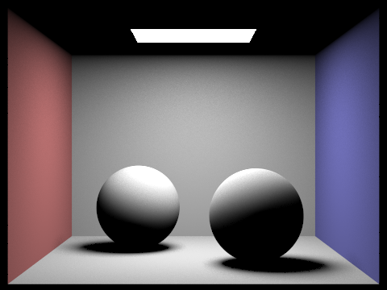

Overview
In this project, we implemented a ray tracing algorithm to render 3d images with physically-realistic lighting and shading for diffuse objects and meshes. We implemented both direct and global illumination, adaptive sampling, and ray-primitive intersection for triangles and spheres.
Part 1: Ray Generation and Scene intersection
In part 1, we implemented generating rays, pixel samples, calculating and recording intersections with primitives. For each sample, I generated a new ray based on the given x and y values as well as the x and y values of a random normalized sample. To generate the ray, I made some designs. The ray generation function converts an origin point from camera (screen) space to world space, and then sets that ray's Min and Max intersection times to take into account near and far clipping planes. Then, the intersect functions of the primitives take in a ray, calculate the point of intersection, and if its within the valid range for the ray, it populates an Intersection object for later use.
The triangle intersection algorithm I used was Muller Trombore, as told in the slide, which uses an efficient version of the plane-test against the three sides of the triangle to yield barycentric coordinates and a time of intersection. Using those barycentric coordinates, we interpolate a surface normal and assess if the ray hit the object.
More specifically, the algorithm first calculate the normal vector of the triangle to determine if the ray is intersecting the triangle from the front or the back. Then check the detailed intersection relationship. After checking that the triangle and the ray is not parallel, calculating the intersection point on the plain where the triangle is, then check the point whether or not inside the triangle by simply check the barycentric coordinates.
The result running the code only using normal shading for a few small ".dae" files.
|
|

|
Part 2: Bounding Volume Hierarche
1.Walk through your BVH construction algorithm. Explain the heuristic you chose for picking the splitting point.
In part 2, I implemented a Bounding Volume Hierarchy. This structure is intended to minimize the work done to calculate intersection in a scene,
To construct the BVH, I first computed all the bounding boxes out of all primitives in the node.
Then checking whether or not the new bounding box is a leaf node on the BVH tree,by comparing the size of the primitive list and the given value.
If it was a leaf node, I could return the newly created node. If it was not a leaf, I recursively created the rest of the tree, using the axis that was the largest on the bounding box's extent.
I split the axis by taking the mean of all primitives, I sorted the primitives into left and right vectors based on which side of the split point the current primitive's centroid fell.
Then just do everything recursively so that I can build the whole BVH.
I chose the splitting point as the mean of the centroids of all primitives in the shape.
It is easiest to implement beacuse we already go through all of the primitives to generate the bounding box. For the axis, I simply chose the largest
dimension of the box at the start of my code. This was to make sure the boxes were relatively compact.
2. Compare rendering times on a few scenes with moderately complex geometries with and without BVH acceleration. Present your results in a one-paragraph analysis.
The rendering times using the BVH were astronomically faster. With a naive implementation, rendering the cow(the simple one) above took around 30 seconds, which could be reduced to under 1 seconds after the BVH is implemented! When we tried to render CBlucy, which has over 100,000 primitives, it took more than 15 minutes on my computer, but with the BVH, it's even more surprising, it could be constructed in around 3 seconds.
Part 3: Direct Illumination
1.Walk through both implementations of the direct lighting function.
1. Diffuse BSDF (function DiffuseBSDF::f) -- simply return reflectance / PI
2. Zero-bounce Illumination: simply use the get_emission() function
3. Hemisphere Sampling:
About the Hemisphere sampling function I implemented was sampling uniformly over a hemisphere iterating among the num_samples.
To do this, I used a monte carlo estimator to calculate an estimate of the amount of light reflecting from the point of
interest. More specifically, creating incoming ray using the sample and intersecting point hit_p, including Lambert's cosine law and BSDF, then I was able to
get the sum of my L_out. Finally, I divide it by the PDF, 0.5*PI exactly to get the final result.
4. Importance Sampling:
Secondly, about the importance sampling in dtrect lighting, I iterated over
the lights found in scene->lights. If the light's is_delta_light function returns true,
meaning the light is a light source,so that I only need to sample once for point lights. For all other lights,
I sample ns_area_light times. Inside each iteration, I can get to know a radiance coming from sample_L function,
then check whether or not there exists intersection between the ray and BVH. If an intersection occurs, I
accumulate the subpart, similar to the implementation in uniform hemisphere
sampling, dividing by the total number(num_samples). Repeatedly doing this for each light and
output the result for all lights in the scene.
|
|
|
In the following comparison, the dragon mesh rendered with uniform hemisphere sampling resulted in a completely black image - because this image uses a point light source, hemisphere sampling makes it statistically impossible to intersect rays with the light source.

|
|
Focus on one particular scene with at least one area light and compare the noise levels in soft shadows when rendering with 1, 4, 16, and 64 light rays
|
|
|
|
|
|
comparison : importance sampling is able to much more efficiently render the scene. When limiting the number of rays and samples, this becomes obvious, as the hemisphere-sampled images contain much more noise.
Part 4: Global Illumination
1.Walk through your implementation of the indirect lighting function.
After the direct illumination implementation, indirect illumination helps bringing light to a scene by accounting for more bounces of light in a scene. Because these bounces are accounted for after the direct light, it is natural to call it indirect light.To implement it, I took a sample from the BSDF, and set the terminate possibility to be 0.3, so that the continue possibility is 0.7, which is useful in the following given help function. First I judge the special case, when depth == 1. That's a great case! Becasue I can simply return the one bounce_radiance. Then I create a recursive function doing almost the same thing as part 3, but every time I just "flip a coin", the Russian Roulette to randomly terminate the continuation.At the same time, check the r.depth variable to determine whether or not I should stop the loop. Then give a next_ray into the following recursive iteration.
show some images of global illumination
|
|
|
Pick one scene and compare rendered views first with only direct illumination, then only indirect illumination. Use 1024 samples per pixel.
|

|
|
For CBbunny.dae, compare rendered views with max_ray_depth set to 0, 1, 2, 3, and 100
|
|
|
|
|
|
|
|
Pick one scene and compare rendered views with various sample-per-pixel rates, including at least 1, 2, 4, 8, 16, 64, and 1024. Use 4 light rays.
|
|

|
|
|
|
|
|
|
|
|
Part 5: adaptive sampling
1.Explain adaptive sampling. Walk through your implementation of the adaptive sampling.
Actually the motivation of adaptive sampling is to improve the efficiency.To do this, we can increase
the number of samples per pixel but we don't have to do this for every pixel. Some pixels can converge
faster with low sampling rates so adaptive sampling tries to find these pixels and return earlier on them
to both reduce noise and speedup the renders.
To do this, I just add some additional information and judgement during the raytrace_pixel function which I had implemented before.
In details, I calculated the s1 and s2(the sum of all samples and the sum of the square of all samples respectively). Then
I can calculate mean:miu and variance of the samples I'd already taken trhough a given pixel.
Then, to measure it's convergence, I need the variable I. To simplify the caculation and reduce the error
during the sqrt() function, I simply used a variable I_2 = 1.96*1.96*variance/number of samples.(i.e. I_square).
Then I just simply compare the I square with the multiplication of (max_tolerance * mean)^2. If I square is less,
then I judeged that it has been already converged and I can let it go so that I can same time and computation power.
2.Pick two scenes and render them with at least 2048 samples per pixel. Show a good sampling rate image with clearly visible differences in sampling rate over various regions and pixels. Include both your sample rate image, which shows your how your adaptive sampling changes depending on which part of the image you are rendering, and your noise-free rendered result. Use 1 sample per light and at least 5 for max ray depth.
|
|
|
|
|
|
You can view my page at
https://zhangwt2001.github.io/proj-webpage-template/